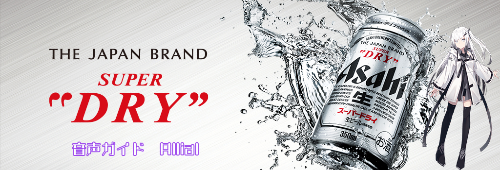

目次
商品情報
さらりとした飲み口、キレ味さえる、いわば辛口の生ビール
原材料
- 麦芽（外国製造又は国内製造（５％未満））
- ホップ
- 米
- コーン
- スターチ
成分表
- アルコール分（度数）
- 5%
- 純アルコール量（g）
- 4g
- エネルギー
- 42kcal
- たんぱく質
- 0.2～0.4g
- 脂質
- 0g
- 炭水化物
- 3.0g
- 糖質
- 3.0g
- 食物繊維
- 0～0.2g
- 食塩相当量
- 0～0.02g
- プリン体
- *5～6mg
- 賞味期間
- 9ヶ月
成分情報などは公式サイトにもう少し詳しく書いてあるのでそちらを参照してください。
Asahi公式サイト呑みレポ
ザ・王道のビールです。
福本伸行さんによる賭博漫画『カイジ』屈指の名シーン
借金返済のために地下施設で強制労働に従事させられていた、主人公のカイジが班長におごられた缶ビールの美味さに驚愕する場の心境
『喉までキンキンい冷えてやがるぜ』
この時カイジが片手に握りしめていた缶のモデルはまさにこのビールです。
また最近では某有名料理系YouTuberの一言が料理系ユーチューブ界でブームになっています。
「でん！銀色のヤツ！」
おすすめする人
炭酸が苦手ではない人には誰にでもおすすめできる品です。
ビールが苦手な人にも比較的おすすめできます。
実際に呑んだ感想
凄く呑みやすい生ビールです。
商品説明の通り、さらりとした飲み口で炭酸による辛味が麦のエグ味を抑えてくれています。
それでいてビールならではの麦の香りが鼻を抜けます。
ビール知識
ビールが生まれたのは紀元前4000年以上前
”ビール”は古い歴史の中では”液体のパン”と呼ばれています。
メソポタミアで人類が農耕生活をはじめた頃、放置してあった麦の粥に酵母が入り込み、自然に発酵したのが起源とされています。
シャンディガフ
ジンジャエールのピリッとした刺激的な後味や苦味と、ビールの苦味が程好くマッチした爽快な味わいです。
ビールが苦手意識のある人にもオススメできるビアカクテルです。
材料
- アサヒスーパードライ
- ジンジャーエール
作り方
分量はお好みで、
よく冷やしたグラスにジンジャエールを注ぎ、静かにビールで満たす。
音声ガイド
現在準備中